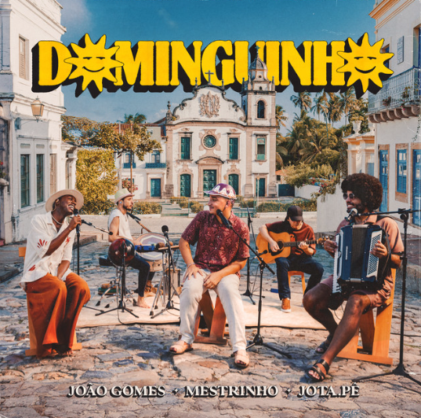

Michael Jackson - The Way You Make Me Feel
Michael Jackson
300 bi inscritos
524.799.633 visualizações • Transmitido ao vivo em 03 out. de 2009
“The Way You Make Me Feel” short film is the second of nine short films for the “Bad” album and shows off a more flirtatious and romantic yet still edgy side of Michael Jackson. The Joe Pytka-directed short film was nominated for an MTV Music Video Award for Best Choreography in 1988. “The Way You Make Me Feel” is the third of five consecutive No.1 singles from the album making Michael the first artist to achieve this milestone.

Alceu Valença - Vampira
Alceu Valença
200 mil visualizações

Black Alien - Que nem o meu cachorro
Black Alien
11 mi visualizações

Charlie Brown Jr - Céu Azul
Charlie Brown Jr
270 mi visualizações

João Gomes - Dominguinho
João Gomes
13 mi visualizações